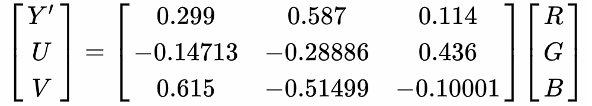

为了统一整体的风格，也为了方便指定元素的颜色，比较好的做法就是一开始就设置常见的颜色名称，然后在后续的代码里通用，这样既方便统一风格，也方便整体性修改颜色。选择颜色是一个难点，但可以参考配色网站等。我这里就直接参考色轮选了红橙黄绿青蓝紫七种色彩，另外给对应的色彩指定了相应的情绪名词，两者可以通用。
$red: #e24a6e !default;
$orange: #fe6856 !default;
$yellow: #fee39c !default;
$green: #7CDE50 !default;
$cyan: #00a396 !default;
$blue: #018798 !default;
$purple: #8A4ED7 !default;
$black: #101b27 !default;
$white: #fefefe !default;
$colors: (
red: $red,
orange: $orange,
yellow: $yellow,
green: $green,
cyan: $cyan,
blue: $blue,
purple: $purple,
black: $black,
white: $white
);设定map变量的原因同上，主要是方便后续的循环。有了颜色之后还需要设置常需要用到的颜色类，包括背景色与文字颜色单独的类以及两者结合起来的主题类，单独的类设置很简单，就直接是附加前缀的事情。
@each $key, $value in $colors {
.bg-#{$key}{
background-color: $value !important;
}
.text-#{$key}{
color: $value !important;
}
}至于说主题类就需要稍微考虑一下背景色应该搭配怎样的文字颜色才合适。就自己浅薄的经验来看，即使是直接搭配对比色多数时候也不是很好看的（可以参考这里，里边文字颜色就是选的色环中的对比色），所以干脆就抛开色度，选黑白两种色彩的文字颜色，明暗对比的效果至少不会太违和。既然如此，首先便需要计算RGB颜色的明度，虽然SCSS中的lightness函数可以直接求出颜色HSL域中的亮度，但亮度毕竟只是物理学概念，明度则考虑到了人眼的感官属性，所以根据背景色的明度决定文字颜色会稍微适合一点，根据RGB计算明度可以根据RGB向YUV色彩模式的转换公式：
我们只需要计算出其中的Y'分量即可：
@function color-contrast($color,
$dark-color: $gray-1, $light-color: $gray-9){
$r : red($color);
$g : green($color);
$b : blue($color);
$luma : 0.299 * $r + 0.587 * $g + 0.114 * $b;
@if $luma <= 150 {
@return $light;
} @else {
@return $dark;
}
}注意到决定取黑色还是白色的阈值是150，这个阈值的决定主观性很强，各位自己多尝试几个值就好。得到了对应的字体颜色，如此便可以得出.color-theme-*类，后边要指定颜色便可以直接添加这些类。
你就像戏台上的大将军，全身上下插满了旗子。
在飞机越过早已无意义的国际日期变更线时，我们见到了人类所见过的最黑的黑夜。飞机仿佛潜行在墨汁的海洋中，看着机舱外那没有一丝光线的世界，我们的心情也黯淡到了极点。
她可以褪色，可以枯萎，怎样都可以，但只要我看她一眼，万般柔情便涌上心头。
这孩子疯了，她疯了。
睡在哪里不都是睡在夜里。
我既感到绝望，又感到幸福极了，想得到什么东西的欲望达到如此强烈的程度，以致让人忘了过去所拥有的已经一去不复返。